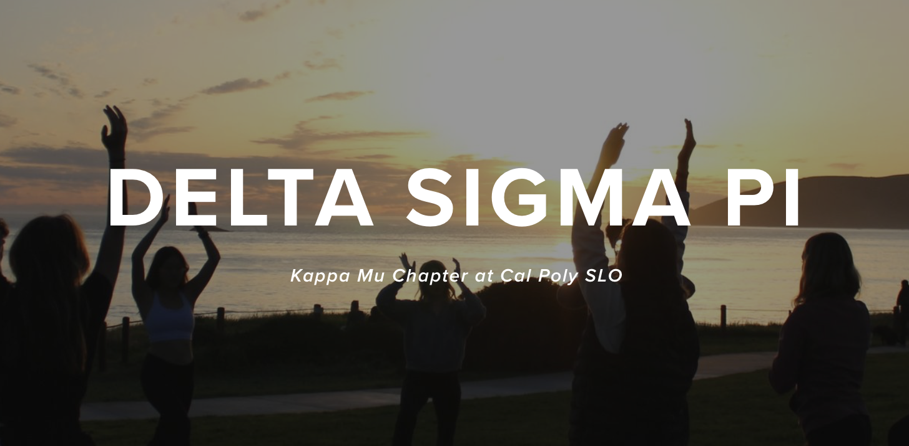

Delta Sigma Pi Website
Designer & Developer • Chapter information portal

I designed and built a modern, responsive site for the Cal Poly Delta Sigma Pi chapter, featuring recruitment details, an event calendar, and member resources. The site is easy to update and supports both prospective members and internal operations.